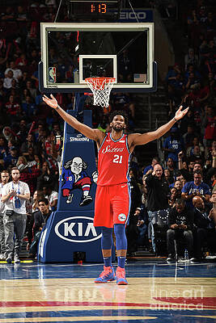

Philadelphia 76ers (Sixers) — АҚШ-тың Пенсильвания штатындағы Филадельфия қаласында орналасқан кәсіби баскетбол командасы. Олар NBA-ның Шығыс конференциясының Атлантик дивизионында ойнайды және лиганың ең көне, тарихы бай клубтарының бірі. Команда 1946 жылы құрылған, бастапқыда Syracuse Nationals деп аталып, 1963 жылы Филадельфияға көшіп, қазіргі атауын алған. Sixers өз ойындарын Wells Fargo Center аренасында өткізеді.
Команда тарихында бірнеше даңқты кезең болды. 1960-70 жылдары Уилт Чемберленнің доминациясы командамға алғашқы чемпиондық қуатты әсер беріп, 1967 жылы NBA титулын жеңіп алды. 1980-жылдары клубтың жұлдызы Джулиус «Dr. J» Эрвинг және оған қосылған Мозес Мэлоун командаға 1983 жылы тағы бір чемпиондық әкелді. Sixers сол дәуірде ең стильді әрі ең мықты командалардың бірі болды.
Соңғы онжылдықта команда қайта құрылымдаудан өтіп, «The Process» деп аталған жас таланттарды дамыту стратегиясына көшті. Осы кезеңде ерекше көзге түскен суперстар — Джоэл Эмбиид, қазіргі кезде лиганың ең доминантты орталықтарының бірі. Sixers бүгінгі таңда да Шығыс конференциясында тұрақты түрде плей-оффқа қатысып, чемпиондыққа таласатын үздік командалардың қатарына жатады.

Джоэл Эмбиид — қазіргі Philadelphia 76ers-тің басты жұлдызы және клуб тарихындағы ең доминантты ойыншылардың бірі. Камерунда туған Эмбиид керемет физикасымен, алыстан лақтыру қабілетімен және әуедегі ойындарымен танымал. Ол NBA MVP (2023) атағын жеңіп алып, бірнеше маусым қатарынан лиганың үздік бомбардирлерінің бірі болды. Эмбиид — Sixers-тің қазіргі заманғы басты символы.